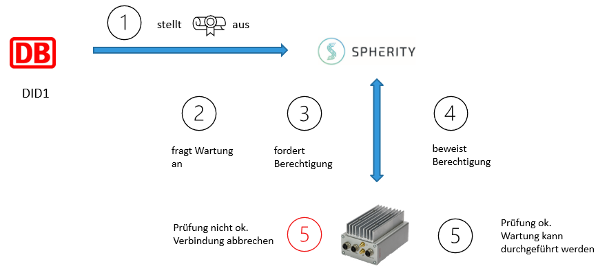

Use Case 3 - Maintenance
Before any maintenance can be executed on the device, it must be checked if an external partner has been approved.
For this purpose, the device sends a check to the partner.
If the result is positive, the maintenance may be carried out and the external partner issues a maintenance order as a certificate to the device.
Maintenance
For simplification, access permissions and template connections have already been created. This will demonstrate steps from 2 to 4.
More information about the use cases can be found on our website:railchain.berlin
